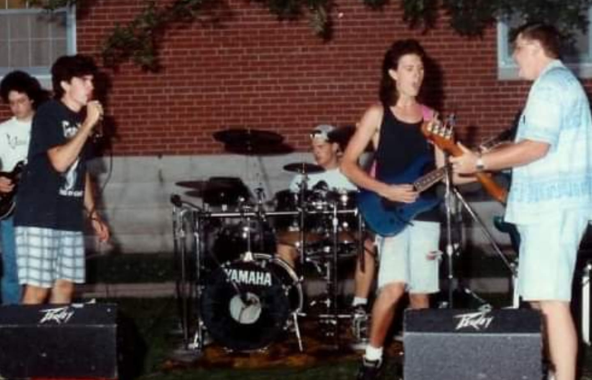
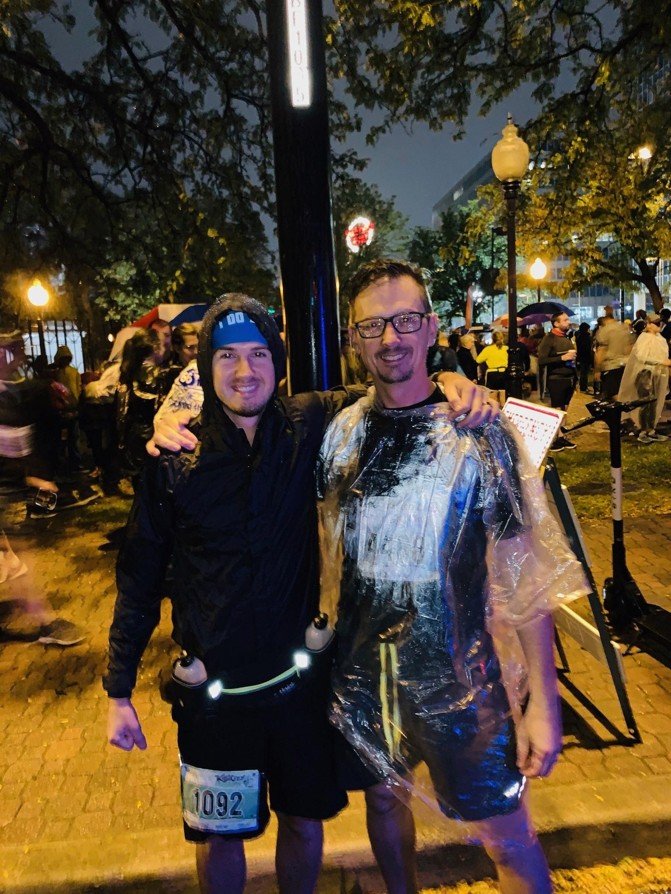
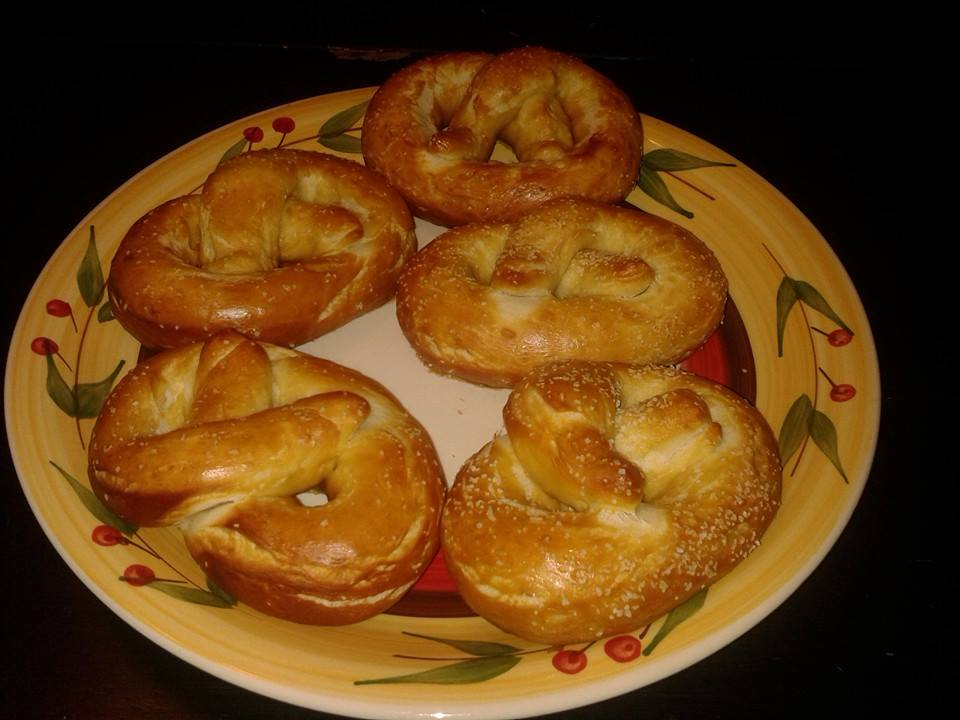
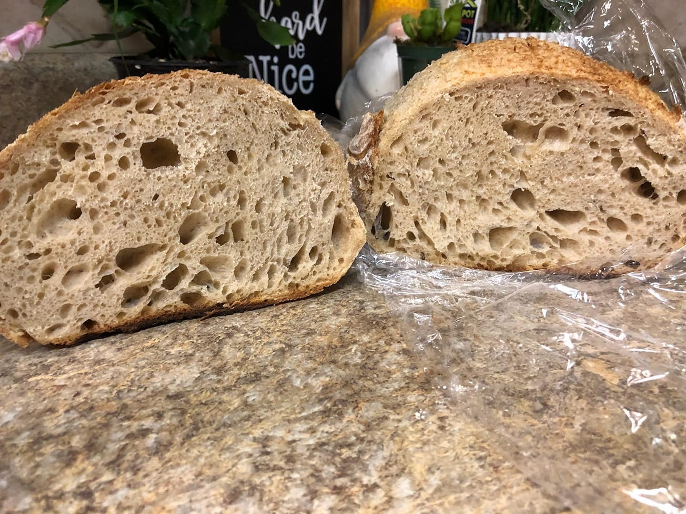
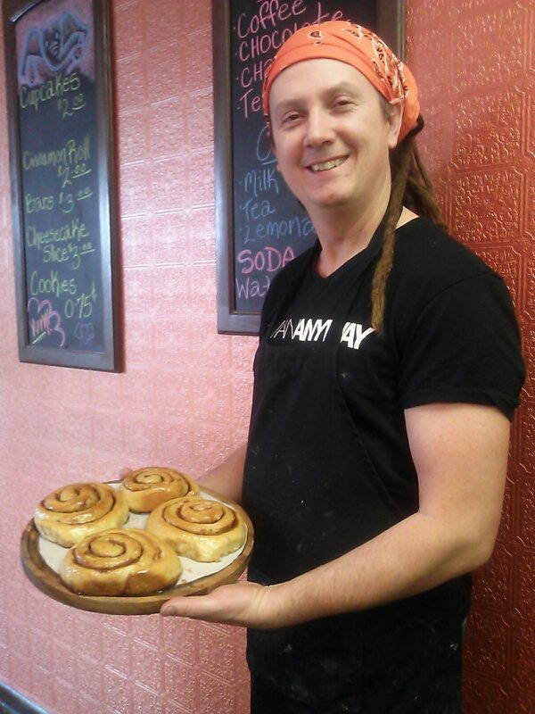

The hobbies and adventures that have shaped my life
A Love for Music
My first experience with a musical instrument was the saxaphone in 7th grade band.
While I played saxaphone throughout my junior high and highschool years,
I later gravitated to the guitar. I've played in a few bands over the years, but there is nothing like the excitement of my first band, Dark Glass.

Dark Glass, My First Band
Physical Fitness
My physical fitness endeavors have been eclectic in nature. While I played football and basketball in highschool
I didn't focus on these too much. As an adult, I have enjoyed resistance training,
running and cycling. Regarding fitness, I guess you could say, I am the prototypical "Jack of all trades, Master of none."
I ran my first half marathon in 2019. I've ran several half marathons in Missouri: Joplin, Springfield and Kansas City.
I've even been down to New Orleans for a run.

KC Marathon 2019
Cooking
I learned to cook out of necessity in my twenties. I have always enjoyed eating, but as a bachelor
I needed to curb my desire for dining out. Over the years, I have developed some skills
and now work in a kitchen (along with bartending). I consider baking my strength.

Soft Prezels

Sour Dough Crumb

Rolls from My Bakery